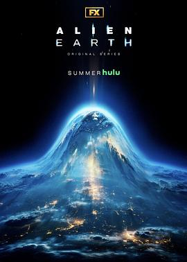

6.4
异形：地球 第一季
Alien: Earth Season 1
2025
美国
评分 6.4
导演:
诺亚·霍利
演员:
西德尼·钱德勒 / 埃里克斯·劳瑟 / 蒂莫西·奥利芬特 / 埃茜·戴维斯 / 大卫·里达尔 / 塞缪尔·布伦金 / 基特·杨
类型:
恐怖,惊悚,科幻
剧情简介
时间来到2120年，地球已不再是人类独占的家园。极端气候与资源枯竭让科技巨头垄断了生存的权利，底层人群在被污染的城市中挣扎。就在此时，一艘来自外太空的飞船在曼谷上空坠毁，散发着诡异的蓝光。年轻的生物学家温迪（西德尼·钱德勒 饰）受命前往残骸区调查，却在金属碎片与焦土之间发现了一个仍在蠕动的外星生物——那是异形的胚体。起初，政府与企业都将其视作“可控武器”的契机，但很快，异形开始繁殖、感染、进化。它们不再依附宿主，而是能在空气中潜伏、渗透皮肤、侵入思维。温迪与一群临时组建的调查员被困在隔离区，通讯中断、城市被封，他们只能靠手电筒和直觉在废墟中求生。导演诺亚·霍利将《异形》的冷峻恐怖重新带回现实：昏暗的隧道、闪烁的警报、脉动的呼吸声，令观众几乎能感到皮肤下的蠕动。蒂莫西·奥利芬特饰演的科学主管康奈尔，代表人类的野心——他想将异形DNA与人类融合以延续文明，而温迪则成了唯一的反对者。随着剧情推进，他们发现这次坠落的飞船并非“误入地球”，而是一场精准的“投放”。真正的威胁不是异形本身，而是人类在恐惧中所做出的选择。《异形：地球 第一季》以浓烈的心理惊悚为核心，不再聚焦太空船的密闭恐惧，而是将灾厄带入现实世界——街道、医院、实验室都成了孵化场。剧中多段长镜头捕捉群体恐慌的细节：孩童在警报声中哭泣、军队焚烧整片城区、科学家用血手标注幸存者名单。这部剧既是“异形”系列的延续，也是全新的重塑。它探讨“生命的极限”与“人性的边界”：当生存成为唯一的信仰，文明还能否继续存在？温迪在最后一集中低声说出那句贯穿全剧的台词——“它们不是来毁灭我们的，而是提醒我们，我们从未真正属于这颗星球。”